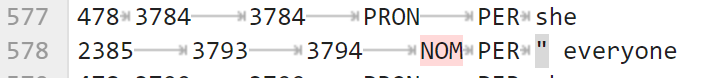

The Output Files
Contents
2.3. The Output Files#
The output from the BookNLP pipeline is three types of files: TSV files (.tokens, .entities, .quotes, .supersense), a JSON file (.book) and an HTML file (.book.html). A good way to think about a TSV is as a CSV where tabs are used to separate tabular data, rather than commas. Essentially, this is a dataset that can be viewed and analyzed in Excel. A JSON file is a bit different. It stores data as you would expect to see it in Python, e.g. dictionaries, lists, etc.
The goal of this chapter is to explain what each of these files contains so that in the next few chapters, we can start extracting important data from them.
2.3.1. The .tokens File#
The very first file that we should analyze is the .tokens file. Essentially, this is a tab separated value file (TSV) that contains all the tokens on each line of the file and some important data about those tokens. A token is a word or punctuation mark within a text. The very first line of the file will look something like this:
paragraph_ID sentence_ID token_ID_within_sentence token_ID_within_document word lemma byte_onset byte_offset POS_tag fine_POS_tag dependency_relation syntactic_head_ID event
As this can be a bit difficult to parse, I am going to load it up as a TSV file through Pandas so we can analyze it a bit better.
import pandas as pd
df = pd.read_csv("data/harry_potter/harry_potter.tokens", delimiter="\t")
df
| paragraph_ID | sentence_ID | token_ID_within_sentence | token_ID_within_document | word | lemma | byte_onset | byte_offset | POS_tag | fine_POS_tag | dependency_relation | syntactic_head_ID | event | |
|---|---|---|---|---|---|---|---|---|---|---|---|---|---|
| 0 | 0 | 0 | 0 | 0 | Mr. | Mr. | 0 | 3 | PROPN | NNP | nsubj | 12 | O |
| 1 | 0 | 0 | 1 | 1 | and | and | 4 | 7 | CCONJ | CC | cc | 0 | O |
| 2 | 0 | 0 | 2 | 2 | Mrs. | Mrs. | 8 | 12 | PROPN | NNP | compound | 3 | O |
| 3 | 0 | 0 | 3 | 3 | Dursley | Dursley | 13 | 20 | PROPN | NNP | conj | 0 | O |
| 4 | 0 | 0 | 4 | 4 | , | , | 20 | 21 | PUNCT | , | punct | 0 | O |
| ... | ... | ... | ... | ... | ... | ... | ... | ... | ... | ... | ... | ... | ... |
| 99251 | 2995 | 6885 | 10 | 99251 | Dudley | Dudley | 438929 | 438935 | PROPN | NNP | pobj | 99250 | O |
| 99252 | 2995 | 6885 | 11 | 99252 | this | this | 438936 | 438940 | DET | DT | det | 99253 | O |
| 99253 | 2995 | 6885 | 12 | 99253 | summer | summer | 438941 | 438947 | NOUN | NN | npadvmod | 99245 | O |
| 99254 | 2995 | 6885 | 13 | 99254 | .... | .... | 438947 | 438951 | PUNCT | . | punct | 99243 | O |
| 99255 | 2995 | 6885 | 14 | 99255 | \t | 438951 | 438952 | PUNCT | '' | punct | 99243 | O | NaN |
99256 rows × 13 columns
If you don’t know what the block of code above does, please do not be concerned. We will not be dealing with Pandas in this textbook. If you are interested in Pandas, though, I have a free textbook on it entitled Introduction to Pandas.
As you can see from the output above, we have something that looks like Excel, or tabular data. Let’s break this down a bit and explain what each column represents:
paragraph_ID - the index of the paragraph, starting at paragraph 1 being 0 and moving up to 3031 in our case.
sentence_ID - same as the paragraph_ID, but with sentences
token_ID_within_sentence - same as a the two above, but with a token count by sentence, resetting with each sentence.
token_ID_within_document - same as above, but where tokens keep going up in value throughout the whole document, starting at 0 and ending, in our case, at 99400.
word - this is the raw text of the word
lemma - this is the root of the word
byte_onset - think of this as the start character index
byte_offset - think of this as the concluding character index
POS_tag = the Part of Speech (based on spaCy)
fine_POS_tag - a more granular understanding of the Part of Speech
dependency_relation - this is equivalent to spaCy’s dep tag.
syntactic_head_ID - This points to the head of the current token so that you can understand how a token relates to other words in the sentence
event = this tells you if the token is a trigger for an EVENT or not. You will see, 0, EVENT, or NaN here.
2.3.2. The .entities File#
Let’s do the same thing with the .entities file now!
df_entities = pd.read_csv("data/harry_potter/harry_potter.entities", delimiter="\t")
df_entities
| COREF | start_token | end_token | prop | cat | text | |
|---|---|---|---|---|---|---|
| 0 | 364 | 0 | 0 | PROP | PER | Mr. |
| 1 | 92 | 2 | 3 | PROP | PER | Mrs. Dursley |
| 2 | 1 | 9 | 10 | PROP | FAC | Privet Drive |
| 3 | 365 | 17 | 17 | PRON | PER | they |
| 4 | 366 | 23 | 23 | PRON | PER | you |
| ... | ... | ... | ... | ... | ... | ... |
| 15858 | 2355 | 99227 | 99227 | PRON | PER | They |
| 15859 | 2351 | 99231 | 99231 | PRON | PER | we |
| 15860 | 441 | 99239 | 99239 | NOM | FAC | home |
| 15861 | 98 | 99241 | 99241 | PRON | PER | I |
| 15862 | 95 | 99251 | 99251 | PROP | PER | Dudley |
15863 rows × 6 columns
If you get an error that looks like this:

Fear not! This happens sometimes when the .entities file is corrupted with something like a ” mark. You simply need to go into the file and remove the character that is causing the error. Use the row number as an indicator of where to go in the text file. Remember, add one row because row 1 is the header data.
Before:
{kind=link}
After:

Let’s return to our data.
df_entities
| COREF | start_token | end_token | prop | cat | text | |
|---|---|---|---|---|---|---|
| 0 | 364 | 0 | 0 | PROP | PER | Mr. |
| 1 | 92 | 2 | 3 | PROP | PER | Mrs. Dursley |
| 2 | 1 | 9 | 10 | PROP | FAC | Privet Drive |
| 3 | 365 | 17 | 17 | PRON | PER | they |
| 4 | 366 | 23 | 23 | PRON | PER | you |
| ... | ... | ... | ... | ... | ... | ... |
| 15858 | 2355 | 99227 | 99227 | PRON | PER | They |
| 15859 | 2351 | 99231 | 99231 | PRON | PER | we |
| 15860 | 441 | 99239 | 99239 | NOM | FAC | home |
| 15861 | 98 | 99241 | 99241 | PRON | PER | I |
| 15862 | 95 | 99251 | 99251 | PROP | PER | Dudley |
15863 rows × 6 columns
Here we see all the entities found within the text. In our case, wee have 15,863 entities in the entire book. It is important to remember that some of these are, of course. Before we get to that, though, let’s break down the columns.
COREF - This is a COREF id that is a unique identifier for the person. This number will be used elsewhere to reference a person, such as in the .quotes file, to link the speaker with the block of text. It should be noted, that COREF is one of the more challenging problems in NLP. Expect this to not be even close to 90% accurate, rather around the 70% accuracy range, particularly when pronouns are used for the entity.
start_token - this is the start token of the entity name
end_token - this is the end token of the entity name. Single token entities will have the same start and end, while multi-word tokens (MWTs) will increase by one for each additional token
prop - this will tlel you if it is a PROP (proper noun) or PROPN (pronoun), or other categories
cat - cat will be the entity type (in spaCy terms. BookNLP includes a few other useful categories, notable VEH for vehicle.
text - this is the raw text that corresponds to the entity.
2.3.3. The .quotes File#
The .quotes file will contain all the quotes in the book. Let’s take a look at this data like we did above.
df_quotes = pd.read_csv("data/harry_potter/harry_potter.quotes", delimiter="\t")
df_quotes
| quote_start | quote_end | mention_start | mention_end | mention_phrase | char_id | quote | |
|---|---|---|---|---|---|---|---|
| 0 | 434 | 438 | 443 | 443 | he | 93 | Little tyke , |
| 1 | 1089 | 1108 | 1085 | 1085 | they | 417 | The Potters , that 's right , that 's what I ... |
| 2 | 1343 | 1346 | 1347 | 1347 | he | 93 | Sorry , |
| 3 | 1416 | 1460 | 1405 | 1405 | he | 435 | Do n't be sorry , my dear sir , for nothing c... |
| 4 | 1603 | 1606 | 1608 | 1609 | Mr. Dursley | 93 | Shoo ! |
| ... | ... | ... | ... | ... | ... | ... | ... |
| 2322 | 99133 | 99146 | 99147 | 99147 | He | 119 | Hurry up , boy , we have n't got all day . |
| 2323 | 99163 | 99172 | 99161 | 99161 | Hermione | 220 | See you over the summer , then . |
| 2324 | 99173 | 99184 | 99186 | 99186 | Hermione | 220 | Hope you have -- er -- a good holiday , |
| 2325 | 99202 | 99208 | 99210 | 99210 | Harry | 98 | Oh , I will , |
| 2326 | 99226 | 99255 | 99210 | 99210 | Harry | 98 | They do n't know we 're not allowed to use ma... |
2327 rows × 7 columns
In our case, we have 2,326 quotes in the entire book. Each quote contains some important metadata:
quote_start - the start token of the quote
quote_end - the end token of the quote
mention_start - this is the start token of the speaker entity
mention_end - this is the end token of the speaker entity
char_id - this will be the unique identifier we saw above in the .entities file so that you can perform COREF and find all dialogues for a single character. Remember, there WILL LIKELY BE ERRORS here. Sometimes you may need to manually align two entity ids as a single character (as we will see)
quote - this is the raw text of the quote.
2.3.4. The .supersense file#
The final TSV file that we have is the .supersense file. This is something that I think is quite unique to BookNLP and an absolute delight to have. Here we have all supersense text found. A good way to think about supersense is as a more broadly defined entities file. Here, we not only have entities, like people, places, etc, but also things like “perception”.
df_supersense = pd.read_csv("data/harry_potter/harry_potter.supersense", delimiter="\t")
df_supersense
| start_token | end_token | supersense_category | text | |
|---|---|---|---|---|
| 0 | 0 | 0 | noun.person | Mr. |
| 1 | 2 | 3 | noun.person | Mrs. Dursley |
| 2 | 6 | 6 | noun.quantity | number |
| 3 | 7 | 7 | noun.quantity | four |
| 4 | 9 | 10 | noun.location | Privet Drive |
| ... | ... | ... | ... | ... |
| 29313 | 99239 | 99239 | noun.location | home |
| 29314 | 99245 | 99245 | verb.perception | have |
| 29315 | 99249 | 99249 | noun.act | fun |
| 29316 | 99251 | 99251 | noun.person | Dudley |
| 29317 | 99253 | 99253 | noun.time | summer |
29318 rows × 4 columns
We can see that we have 29,318 different supersense items with four pieces of data:
start_token - this is the start token for the supersense text
end_token - this is the end token for the supersense text
supersense_category - this is the part of speech and category to which the supersense belongs
text - this is the raw text of the supersense
2.3.5. The .book File#
Now that we have looked at all the TSV files, let’s take a look at the .book file. This is a large JSON file that contains information structured around the characters. In the next few chapters, we will learn a lot more about this file, but for now, let’s explore how it is structured.
import json
with open ("data/harry_potter/harry_potter.book", "r") as f:
book_data = json.load(f)
book_data.keys()
dict_keys(['characters'])
It is a giant dictionary with one key: characters. The value of characters is a list. Let’s check out it’s length.
len(book_data["characters"])
723
So, we have 723 unique characters throughout the book. Again, expect errors here. For each character, we have a dictionary with 8 keys:;
book_data["characters"][0].keys()
dict_keys(['agent', 'patient', 'mod', 'poss', 'id', 'g', 'count', 'mentions'])
These keys are as follows:
agent - actions that character does
patient - actions done to that character
mod - adjectives that describe them in the text
poss - things the entity has (very broadly defined), e.g. relatives like aunt, uncle; or parts of the body, e.g. head, back, etc.
id - their unique id (as seen above)
g - analysis about gender pronouns used
count - number of times the entity appears
mentions - how the character is referenced
book_data["characters"][0]["agent"][:1]
book_data["characters"][0]["patient"][:1]
book_data["characters"][0]["mod"][:1]
book_data["characters"][0]["poss"][:1]
book_data["characters"][0]["id"]
book_data["characters"][0]["g"]
book_data["characters"][0]["count"]
book_data["characters"][0]["mentions"].keys()
dict_keys(['proper', 'common', 'pronoun'])
book_data["characters"][0]["mod"][:10]
[{'w': 'name', 'i': 1206},
{'w': 'older', 'i': 4370},
{'w': 'famous', 'i': 4423},
{'w': 'ready', 'i': 4533},
{'w': 'special', 'i': 5645},
{'w': 'famous', 'i': 5651},
{'w': 'asleep', 'i': 5935},
{'w': 'fast', 'i': 6318},
{'w': 'small', 'i': 6338},
{'w': 'skinny', 'i': 6340}]
book_data["characters"][0]["poss"][:10]
[{'w': 'aunt', 'i': 4356},
{'w': 'uncle', 'i': 4358},
{'w': 'name', 'i': 4461},
{'w': 'blankets', 'i': 5622},
{'w': 'cousin', 'i': 5698},
{'w': 'Petunia', 'i': 5947},
{'w': 'aunt', 'i': 5981},
{'w': 'back', 'i': 6020},
{'w': 'aunt', 'i': 6062},
{'w': 'aunt', 'i': 6133}]
book_data["characters"][0]["id"]
98
For the g category, we see a few different keys:
inference - the pronouns for the entity in order of highest frequency to lowest
argmax - the likely pronoun/gender for the entity
max - the degree to which that pronoun set is used compared to others, e.g. the percentage
total (not entirely sure about this)
book_data["characters"][0]["g"]
{'inference': {'he/him/his': 0.811,
'she/her': 0.112,
'they/them/their': 0.077,
'xe/xem/xyr/xir': 0.0,
'ze/zem/zir/hir': 0.0},
'argmax': 'he/him/his',
'max': 0.811,
'total': 200311.834}
book_data["characters"][0]["count"]
2005
For mentions, we have three special keys:
proper - the way they are referenced as proper nouns
common - informal names
pronoun - the pronouns used to refer to them in prose and dialogue
book_data["characters"][0]["mentions"].keys()
dict_keys(['proper', 'common', 'pronoun'])
book_data["characters"][0]["mentions"]["proper"]
[{'c': 664, 'n': 'Harry'},
{'c': 46, 'n': 'Potter'},
{'c': 23, 'n': 'Harry Potter'},
{'c': 11, 'n': 'Mr. Potter'},
{'c': 2, 'n': 'Mr. Harry Potter'},
{'c': 1, 'n': 'Harry Hunting'},
{'c': 1, 'n': 'Cokeworth Harry'},
{'c': 1, 'n': 'Both Harry'},
{'c': 1, 'n': 'The Harry Potter'},
{'c': 1, 'n': 'HARRY POTTER'},
{'c': 1, 'n': 'Even Harry'},
{'c': 1, 'n': 'POTTER'},
{'c': 1, 'n': 'the famous Harry Potter'}]
book_data["characters"][0]["mentions"]["common"]
[]
book_data["characters"][0]["mentions"]["pronoun"]
[{'c': 303, 'n': 'he'},
{'c': 217, 'n': 'his'},
{'c': 172, 'n': 'you'},
{'c': 144, 'n': 'He'},
{'c': 107, 'n': 'him'},
{'c': 99, 'n': 'I'},
{'c': 34, 'n': 'me'},
{'c': 30, 'n': 'your'},
{'c': 27, 'n': 'yeh'},
{'c': 27, 'n': 'You'},
{'c': 18, 'n': 'yer'},
{'c': 16, 'n': 'himself'},
{'c': 14, 'n': 'my'},
{'c': 12, 'n': 'His'},
{'c': 5, 'n': 'Your'},
{'c': 3, 'n': 'Yeh'},
{'c': 3, 'n': 'Yer'},
{'c': 3, 'n': 'My'},
{'c': 2, 'n': "yeh've"},
{'c': 2, 'n': "yeh'd"},
{'c': 2, 'n': 'ter'},
{'c': 2, 'n': 'myself'},
{'c': 2, 'n': 'yourself'},
{'c': 1, 'n': 'YOU'},
{'c': 1, 'n': 'mine'},
{'c': 1, 'n': 'yours'},
{'c': 1, 'n': "Yeh'd"},
{'c': 1, 'n': 'yerself'},
{'c': 1, 'n': "Yeh've"},
{'c': 1, 'n': "yeh'll"}]
2.3.6. The .book.html File#
The final file that is outputted from BookNLP is the .book.html file. This is a nicely organized, easy-to-read, html file that should open in your browser.